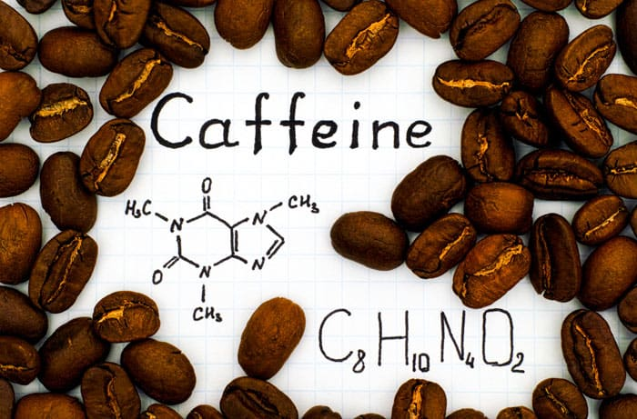

 Кофеї́н — ксантиновий алкалоїд, міститься в бобах кавового дерева, у листі чаю, мате, ягодах гуарани, а також у невеликих кількостях у какао та горіхах кола; стимулятор центральної нервової системи, компонент тонізуючих напоїв та лікарських засобів для полегшення дихання. У рослинах кофеїн відіграє роль природного пестициду, який паралізує та вбиває комахпаразитів.
Кофеїн — безбарвна з гірким смаком кристалічна речовина, за структурною будовою гетероциклічний алкалоїд пуринового ряду. Вперше добутий з кавового екстракту в 1821 році.
Кофеїн — алкалоїд рослинного походження, міститься в деяких рослинах, найвідоміші з яких кавове дерево, чай, какао. Мате та гуарана як джерела кофеїну використовуються рідше, в основному для приготування чаю і, останнім часом, енергетичних напоїв. Альтернативні назви кофеїну — матеїн і гуаранін — походять від назв цих двох рослин відповідно.
Головні джерела кофеїну для сучасної людини — це чай, кава і шоколад. У своєму науковому дослідженні безпеки кофеїну в 2015 році Європейський орган з безпеки харчових продуктів (EFSA) виявив, що сумарна кількість кофеїну, яку вживають діти та підлітки з енергетичних напоїв, незначна. На сьогоднішній день найбільше кофеїну споживається з інших джерел: кави, чаю, шоколаду і коли. І це стосується людей будь-якого віку.
Кофеїн є стимулятором центральної нервової системи (ЦНС). Дослідження свідчать, що кофеїн підсилює процеси збудження в корі головного мозку, у відповідних дозах він підсилює позитивні умовні рефлекси і підвищує рухову активність. Стимулююча дія підвищує розумову та фізичну працездатність, зменшує втому та сонливість. Великі дози, щоправда, можуть призводити до виснаження нервових клітин. У дозуванні кофеїну треба враховувати індивідуальні особливості нервової системи. Кофеїн послаблює дію снодійних і наркотичних речовин, підвищує рефлекторну збудливість спинного мозку.
Серцева діяльність під дією кофеїну посилюється, серцеві скорочення стають більш інтенсивними та частішими. У колаптоїдних і шокових станах артеріальний тиск під дією кофеїну підвищується, однак у разі нормального артеріального тиску суттєвих змін не відбувається, оскільки водночас зі збудженням судинного центру і серця розширюються також судини скелетних м'язів та інших органів тіла (мозку, серця, нирок) (щоправда судини органів черевної порожнини звужуються).
Під дією кофеїну підсилюється секреторна діяльність шлунку.
Ка́ва — напій, що виготовляється зі смаженого насіння плодів — «бобів» кавового дерева. Кава найбільше цінується через виражену збадьорливу дію, завдяки вмісту алкалоїдів кофеїну та теоброміну. Кава культивується з давніх часів і займає важливе місце в кулінарних традиціях багатьох культур світу.
За деякими оцінками, кавовий напій є другою за об'ємами споживання речовиною на Землі після води (за іншими — другим після води є чай).
Чай — напій, що отримується заварюванням, варінням або настоюванням підготовленого листа чайного куща. Чаєм також називається сухе листя чайного куща, призначене для заварювання цього напою. У розширеному сенсі — будь-який листяний або трав'яний настій.
Найрозповсюдженішими та найвідомішими є чорний та зелений чаї.